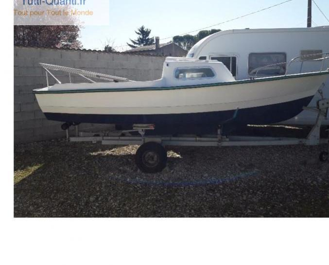

<div style="max-height: 600px; overflow-y: scroll;">
    <div style="display: grid; grid-template-columns: auto auto;">
        
        <div style="padding: 14px;">
            <h2>Jules Verne</h2>
            SIR 520
        </div>
    </div>
    <div>
        Le Jules Verne est un SIR 520 qui avec son petit moteur diesel de 10CV, nous rend bien des services comme support 
        logistique.
        Il sera bas&eacute; &agrave; Locmariaquer &agrave; partir de Janvier et une préparation "P&ecirc;che" est en cours.
    </div>
    <div>
        <h2>Plus d'infos...</h2>
        . . .
    </div>
</div>